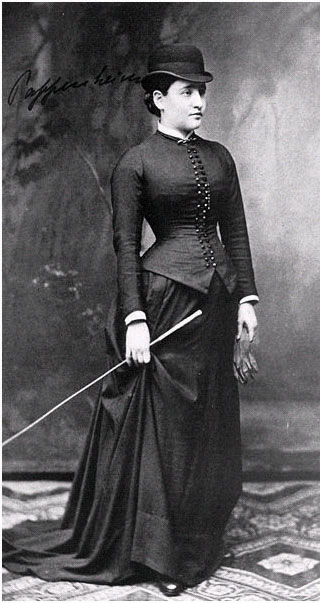
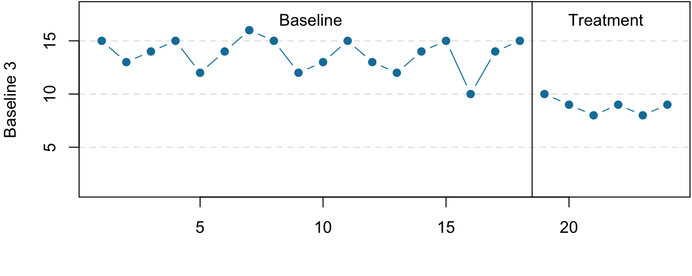

10 Single-Subject Research
Researcher Vance Hall and his colleagues were faced with the challenge of increasing the extent to which six disruptive elementary school students stayed focused on their schoolwork (Hall et al., 1968). For each of several days, the researchers carefully recorded whether or not each student was doing schoolwork every 10 seconds during a 30-minute period. Once they had established this baseline, they introduced a treatment. The treatment was that when the student was doing schoolwork, the teacher gave him or her positive attention in the form of a comment like “good work” or a pat on the shoulder. The result was that all of the students dramatically increased their time spent on schoolwork and decreased their disruptive behavior during this treatment phase. For example, a student named Robbie originally spent 25% of his time on schoolwork and the other 75% “snapping rubber bands, playing with toys from his pocket, and talking and laughing with peers” (p. 3). During the treatment phase, however, he spent 71% of his time on schoolwork and only 29% on other activities. Finally, when the researchers had the teacher stop giving positive attention, the students all decreased their studying and increased their disruptive behavior. This confirmed that it was, in fact, the positive attention that was responsible for the increase in studying. This was one of the first studies to show that attending to positive behavior—and ignoring negative behavior—could be a quick and effective way to deal with problem behavior in an applied setting.
Most of this book is about what can be called group research, which typically involves studying a large number of participants and combining their data to draw general conclusions about human behavior. The study by Hall and his colleagues, in contrast, is an example of single-subject research, which typically involves studying a small number of participants and focusing closely on each individual. In this chapter, we consider this alternative approach. We begin with an overview of single-subject research, including some assumptions on which it is based, who conducts it, and why they do. We then look at some basic single-subject research designs and how the data from those designs are analyzed. Finally, we consider some of the strengths and weaknesses of single-subject research as compared with group research and see how these two approaches can complement each other.
10.1 Overview of Single-Subject Research
LEARNING OBJECTIVES
- Explain what single-subject research is, including how it differs from other types of psychological research.
- Explain what case studies are, including some of their strengths and weaknesses.
- Explain who uses single-subject research and why.
What Is Single-Subject Research?
Single-subject research is a type of quantitative research that involves studying in detail the behavior of each of a small number of participants. Note that the term single-subject does not mean that only one participant is studied; it is more typical for there to be somewhere between two and 10 participants. (This is why single-subject research designs are sometimes called small-n designs, where n is the statistical symbol for the sample size.) Single-subject research can be contrasted with group research, which typically involves studying large numbers of participants and examining their behavior primarily in terms of group means, standard deviations, and so on. The majority of this book is devoted to understanding group research, which is the most common approach in psychology. But single-subject research is an important alternative, and it is the primary approach in some areas of psychology.
Before continuing, it is important to distinguish single-subject research from two other approaches, both of which involve studying in detail a small number of participants. One is qualitative research, which focuses on understanding people’s subjective experience by collecting relatively unstructured data (e.g., detailed interviews) and analyzing those data using narrative rather than quantitative techniques. Single-subject research, in contrast, focuses on understanding objective behavior through experimental manipulation and control, collecting highly structured data, and analyzing those data quantitatively.
It is also important to distinguish single-subject research from case studies. A case study is a detailed description of an individual, which can include both qualitative and quantitative analyses. (Case studies that include only qualitative analyses can be considered a type of qualitative research.) The history of psychology is filled with influential cases studies, such as Sigmund Freud’s description of “Anna O.” (see box “The Case of ‘Anna O.’”) and John Watson and Rosalie Rayner’s description of Little Albert (Watson & Rayner, 1920) who learned to fear a white rat—along with other furry objects—when the researchers made a loud noise while he was playing with the rat. Case studies can be useful for suggesting new research questions and for illustrating general principles. They can also help researchers understand rare phenomena, such as the effects of damage to a specific part of the human brain. As a general rule, however, case studies cannot substitute for carefully designed group or single-subject research studies. One reason is that case studies usually do not allow researchers to determine whether specific events are causally related, or even related at all. For example, if a patient is described in a case study as having been sexually abused as a child and then as having developed an eating disorder as a teenager, there is no way to determine whether these two events had anything to do with each other. A second reason is that an individual case can always be unusual in some way and therefore be unrepresentative of people more generally. Thus case studies have serious problems with both internal and external validity.
The Case of “Anna O.”
Sigmund Freud used the case of a young woman he called “Anna O.” to illustrate many principles of his theory of psychoanalysis (Freud, 1957). (Her real name was Bertha Pappenheim, and she was an early feminist who went on to make important contributions to the field of social work.) Anna had come to Freud’s colleague Josef Breuer around 1880 with a variety of odd physical and psychological symptoms. One of them was that for several weeks she was unable to drink any fluids. According to Freud,
She would take up the glass of water that she longed for, but as soon as it touched her lips she would push it away like someone suffering from hydrophobia….She lived only on fruit, such as melons, etc., so as to lessen her tormenting thirst (p. 9).
But according to Freud, a breakthrough came one day while Anna was under hypnosis.
[S]he grumbled about her English “lady-companion,” whom she did not care for, and went on to describe, with every sign of disgust, how she had once gone into this lady’s room and how her little dog—horrid creature!—had drunk out of a glass there. The patient had said nothing, as she had wanted to be polite. After giving further energetic expression to the anger she had held back, she asked for something to drink, drank a large quantity of water without any difficulty, and awoke from her hypnosis with the glass at her lips; and thereupon the disturbance vanished, never to return.
Freud’s interpretation was that Anna had repressed the memory of this incident along with the emotion that it triggered and that this was what had caused her inability to drink. Furthermore, her recollection of the incident, along with her expression of the emotion she had repressed, caused the symptom to go away.
As an illustration of Freud’s theory, the case study of Anna O. is quite effective. As evidence for the theory, however, it is essentially worthless. The description provides no way of knowing whether Anna had really repressed the memory of the dog drinking from the glass, whether this repression had caused her inability to drink, or whether recalling this “trauma” relieved the symptom. It is also unclear from this case study how typical or atypical Anna’s experience was.

Assumptions of Single-Subject Research
Again, single-subject research involves studying a small number of participants and focusing intensively on the behavior of each one. But why take this approach instead of the group approach? There are several important assumptions underlying single-subject research, and it will help to consider them now.
First and foremost is the assumption that it is important to focus intensively on the behavior of individual participants. One reason for this is that group research can hide individual differences and generate results that do not represent the behavior of any individual. For example, a treatment that has a positive effect for half the people exposed to it but a negative effect for the other half would, on average, appear to have no effect at all. Single-subject research, however, would likely reveal these individual differences. A second reason to focus intensively on individuals is that sometimes it is the behavior of a particular individual that is primarily of interest. A school psychologist, for example, might be interested in changing the behavior of a particular disruptive student. Although previous published research (both single-subject and group research) is likely to provide some guidance on how to do this, conducting a study on this student would be more direct and probably more effective.
A second assumption of single-subject research is that it is important to discover causal relationships through the manipulation of an independent variable, the careful measurement of a dependent variable, and the control of extraneous variables. For this reason, single-subject research is often considered a type of experimental research with good internal validity. Recall, for example, that Hall and his colleagues measured their dependent variable (studying) many times—first under a no-treatment control condition, then under a treatment condition (positive teacher attention), and then again under the control condition. Because there was a clear increase in studying when the treatment was introduced, a decrease when it was removed, and an increase when it was reintroduced, there is little doubt that the treatment was the cause of the improvement.
A third assumption of single-subject research is that it is important to study strong and consistent effects that have biological or social importance. Applied researchers, in particular, are interested in treatments that have substantial effects on important behaviors and that can be implemented reliably in the real-world contexts in which they occur. This is sometimes referred to as social validity (Wolf, 1978). The study by Hall and his colleagues, for example, had good social validity because it showed strong and consistent effects of positive teacher attention on a behavior that is of obvious importance to teachers, parents, and students. Furthermore, the teachers found the treatment easy to implement, even in their often chaotic elementary school classrooms.
Who Uses Single-Subject Research?
Single-subject research has been around as long as the field of psychology itself. In the late 1800s, one of psychology’s founders, Wilhelm Wundt, studied sensation and consciousness by focusing intensively on each of a small number of research participants. Herman Ebbinghaus’s research on memory and Ivan Pavlov’s research on classical conditioning are other early examples, both of which are still described in almost every introductory psychology textbook.
In the middle of the 20th century, B. F. Skinner clarified many of the assumptions underlying single-subject research and refined many of its techniques (Skinner, 1938). He and other researchers then used it to describe how rewards, punishments, and other external factors affect behavior over time. This work was carried out primarily using nonhuman subjects—mostly rats and pigeons. This approach, which Skinner called the experimental analysis of behavior—remains an important subfield of psychology and continues to rely almost exclusively on single-subject research. For excellent examples of this work, look at any issue of the Journal of the Experimental Analysis of Behavior. By the 1960s, many researchers were interested in using this approach to conduct applied research primarily with humans—a subfield now called applied behavior analysis (Baer et al., 1968). Applied behavior analysis plays an especially important role in contemporary research on developmental disabilities, education, organizational behavior, and health, among many other areas. Excellent examples of this work (including the study by Hall and his colleagues) can be found in the Journal of Applied Behavior Analysis.
Although most contemporary single-subject research is conducted from the behavioral perspective, it can in principle be used to address questions framed in terms of any theoretical perspective. For example, a studying technique based on cognitive principles of learning and memory could be evaluated by testing it on individual high school students using the single-subject approach. The single-subject approach can also be used by clinicians who take any theoretical perspective—behavioral, cognitive, psychodynamic, or humanistic—to study processes of therapeutic change with individual clients and to document their clients’ improvement (Kazdin, 2019).
KEY TAKEAWAYS
- Single-subject research—which involves testing a small number of participants and focusing intensively on the behavior of each individual—is an important alternative to group research in psychology.
- Single-subject studies must be distinguished from case studies, in which an individual case is described in detail. Case studies can be useful for generating new research questions, for studying rare phenomena, and for illustrating general principles. However, they cannot substitute for carefully controlled experimental or correlational studies because they are low in internal and external validity.
- Single-subject research has been around since the beginning of the field of psychology. Today it is most strongly associated with the behavioral theoretical perspective, but it can in principle be used to study behavior from any perspective.
EXERCISES
- Practice: Find and read a published article in psychology that reports new single-subject research. (A good source is articles published in the Journal of Applied Behavior Analysis) Write a short summary of the study.
- Practice: Find and read a published case study in psychology. (Use case study as a key term in a PsycINFO search.) Then do the following:
- Describe one problem related to internal validity.
- Describe one problem related to external validity.
- Generate one hypothesis suggested by the case study that might be interesting to test in a systematic single-subject or group study.
10.2 Single-Subject Research Designs
LEARNING OBJECTIVES
- Describe the basic elements of a single-subject research design.
- Design simple single-subject studies using reversal and multiple-baseline designs.
- Explain how single-subject research designs address the issue of internal validity.
- Interpret the results of simple single-subject studies based on the visual inspection of graphed data.
General Features of Single-Subject Designs
Before looking at any specific single-subject research designs, it will be helpful to consider some features that are common to most of them. Many of these features are illustrated in Figure @ref(fig:aba), which shows the results of a generic single-subject study. First, the dependent variable (represented on the y-axis of the graph) is measured repeatedly over time (represented by the x-axis) at regular intervals. Second, the study is divided into distinct phases, and the participant is tested under one condition per phase. The conditions are often designated by capital letters: A, B, C, and so on. Thus Figure @ref(fig:aba) represents a design in which the participant was tested first in one condition (A), then tested in another condition (B), and finally retested in the original condition (A). (This is called a reversal design and will be discussed in more detail shortly.)
Another important aspect of single-subject research is that the change from one condition to the next does not usually occur after a fixed amount of time or number of observations. Instead, it depends on the participant’s behavior. Specifically, the researcher waits until the participant’s behavior in one condition becomes fairly consistent from observation to observation before changing conditions. This is sometimes referred to as the steady state strategy (Sidman, 1960). The idea is that when the dependent variable has reached a steady state, then any change across conditions will be relatively easy to detect. Recall that we encountered this same principle when discussing experimental research more generally. The effect of an independent variable is easier to detect when the “noise” in the data is minimized.
Reversal Designs
The most basic single-subject research design is the reversal design, also called the ABA design. During the first phase, A, a baseline is established for the dependent variable. This is the level of responding before any treatment is introduced, and therefore the baseline phase is a kind of control condition. When steady state responding is reached, phase B begins as the researcher introduces the treatment. There may be a period of adjustment to the treatment during which the behavior of interest becomes more variable and begins to increase or decrease. Again, the researcher waits until that dependent variable reaches a steady state so that it is clear whether and how much it has changed. Finally, the researcher removes the treatment and again waits until the dependent variable reaches a steady state. This basic reversal design can also be extended with the reintroduction of the treatment (ABAB), another return to baseline (ABABA), and so on.
The study by Hall and his colleagues was an ABAB reversal design. Figure @ref(fig:abab) approximates the data for Robbie. The percentage of time he spent studying (the dependent variable) was low during the first baseline phase, increased during the first treatment phase until it leveled off, decreased during the second baseline phase, and again increased during the second treatment phase.
Why is the reversal—the removal of the treatment—considered to be necessary in this type of design? Why use an ABA design, for example, rather than a simpler AB design? Notice that an AB design is essentially an interrupted time-series design applied to an individual participant. Recall that one problem with that design is that if the dependent variable changes after the treatment is introduced, it is not always clear that the treatment was responsible for the change. It is possible that something else changed at around the same time and that this extraneous variable is responsible for the change in the dependent variable. But if the dependent variable changes with the introduction of the treatment and then changes back with the removal of the treatment, it is much clearer that the treatment (and removal of the treatment) is the cause. In other words, the reversal greatly increases the internal validity of the study.
There are close relatives of the basic reversal design that allow for the evaluation of more than one treatment. In a multiple-treatment reversal design, a baseline phase is followed by separate phases in which different treatments are introduced. For example, a researcher might establish a baseline of studying behavior for a disruptive student (A), then introduce a treatment involving positive attention from the teacher (B), and then switch to a treatment involving mild punishment for not studying (C). The participant could then be returned to a baseline phase before reintroducing each treatment—perhaps in the reverse order as a way of controlling for carryover effects. This particular multiple-treatment reversal design could also be referred to as an ABCACB design.
In an alternating treatments design, two or more treatments are alternated relatively quickly on a regular schedule. For example, positive attention for studying could be used one day and mild punishment for not studying the next, and so on. Or one treatment could be implemented in the morning and another in the afternoon. The alternating treatments design can be a quick and effective way of comparing treatments, but only when the treatments are fast acting.
Multiple-Baseline Designs
There are two potential problems with the reversal design—both of which have to do with the removal of the treatment. One is that if a treatment is working, it may be unethical to remove it. For example, if a treatment seemed to reduce the incidence of self-injury in a developmentally disabled child, it would be unethical to remove that treatment just to show that the incidence of self-injury increases. The second problem is that the dependent variable may not return to baseline when the treatment is removed. For example, when positive attention for studying is removed, a student might continue to study at an increased rate. This could mean that the positive attention had a lasting effect on the student’s studying, which of course would be good. But it could also mean that the positive attention was not really the cause of the increased studying in the first place. Perhaps something else happened at about the same time as the treatment—for example, the student’s parents might have started rewarding him for good grades.
One solution to these problems is to use a multiple-baseline design, which is represented in Figure @ref(fig:multiple). In one version of the design, a baseline is established for each of several participants, and the treatment is then introduced for each one. In essence, each participant is tested in an AB design. The key to this design is that the treatment is introduced at a different time for each participant. The idea is that if the dependent variable changes when the treatment is introduced for one participant, it might be a coincidence. But if the dependent variable changes when the treatment is introduced for multiple participants—especially when the treatment is introduced at different times for the different participants—then it is extremely unlikely to be a coincidence.


As an example, consider a study by Scott Ross and Robert Horner (Ross et al., 2009). They were interested in how a school-wide bullying prevention program affected the bullying behavior of particular problem students. At each of three different schools, the researchers studied two students who had regularly engaged in bullying. During the baseline phase, they observed the students for 10-minute periods each day during lunch recess and counted the number of aggressive behaviors they exhibited toward their peers. (The researchers used handheld computers to help record the data.) After 2 weeks, they implemented the program at one school. After 2 more weeks, they implemented it at the second school. And after 2 more weeks, they implemented it at the third school. They found that the number of aggressive behaviors exhibited by each student dropped shortly after the program was implemented at his or her school. Notice that if the researchers had only studied one school or if they had introduced the treatment at the same time at all three schools, then it would be unclear whether the reduction in aggressive behaviors was due to the bullying program or something else that happened at about the same time it was introduced (e.g., a holiday, a television program, a change in the weather). But with their multiple-baseline design, this kind of coincidence would have to happen three separate times—a very unlikely occurrence—to explain their results.
In another version of the multiple-baseline design, multiple baselines are established for the same participant but for different dependent variables, and the treatment is introduced at a different time for each dependent variable. Imagine, for example, a study on the effect of setting clear goals on the productivity of an office worker who has two primary tasks: making sales calls and writing reports. Baselines for both tasks could be established. For example, the researcher could measure the number of sales calls made and reports written by the worker each week for several weeks. Then the goal-setting treatment could be introduced for one of these tasks, and at a later time the same treatment could be introduced for the other task. The logic is the same as before. If productivity increases on one task after the treatment is introduced, it is unclear whether the treatment caused the increase. But if productivity increases on both tasks after the treatment is introduced—especially when the treatment is introduced at two different times—then it seems much clearer that the treatment was responsible.
In yet a third version of the multiple-baseline design, multiple baselines are established for the same participant but in different settings. For example, a baseline might be established for the amount of time a child spends reading during his free time at school and during his free time at home. Then a treatment such as positive attention might be introduced first at school and later at home. Again, if the dependent variable changes after the treatment is introduced in each setting, then this gives the researcher confidence that the treatment is, in fact, responsible for the change.
Data Analysis in Single-Subject Research
In addition to its focus on individual participants, single-subject research differs from group research in the way the data are typically analyzed. As we have seen throughout the book, group research involves combining data across participants. Group data are described using statistics such as means, standard deviations, Pearson’s r, and so on to detect general patterns. Finally, inferential statistics are used to help decide whether the result for the sample is likely to generalize to the population. Single-subject research, by contrast, relies heavily on a very different approach called visual inspection. This means plotting individual participants’ data as shown throughout this chapter, looking carefully at those data, and making judgments about whether and to what extent the independent variable had an effect on the dependent variable. Inferential statistics are typically not used.
In visually inspecting their data, single-subject researchers take several factors into account. One of them is changes in the level of the dependent variable from condition to condition. If the dependent variable is much higher or much lower in one condition than another, this suggests that the treatment had an effect. A second factor is trend, which refers to gradual increases or decreases in the dependent variable across observations. If the dependent variable begins increasing or decreasing with a change in conditions, then again this suggests that the treatment had an effect. It can be especially telling when a trend changes directions—for example, when an unwanted behavior is increasing during baseline but then begins to decrease with the introduction of the treatment. A third factor is latency, which is the time it takes for the dependent variable to begin changing after a change in conditions. In general, if a change in the dependent variable begins shortly after a change in conditions, this suggests that the treatment was responsible.
In the top panel of Figure @ref(fig:aba2), there are fairly obvious changes in the level and trend of the dependent variable from condition to condition. Furthermore, the latencies of these changes are short; the change happens immediately. This pattern of results strongly suggests that the treatment was responsible for the changes in the dependent variable. In the bottom panel of Figure @ref(fig:aba2), however, the changes in level are fairly small. And although there appears to be an increasing trend in the treatment condition, it looks as though it might be a continuation of a trend that had already begun during baseline. This pattern of results strongly suggests that the treatment was not responsible for any changes in the dependent variable—at least not to the extent that single-subject researchers typically hope to see.


The results of single-subject research can also be analyzed using statistical procedures—and this is becoming more common. There are many different approaches, and single-subject researchers continue to debate which are the most useful. One approach parallels what is typically done in group research. The mean and standard deviation of each participant’s responses under each condition are computed and compared, and inferential statistical tests such as the t test or analysis of variance are applied (Fisch, 2001). (Note that averaging across participants is less common.) Another approach is to compute the percentage of nonoverlapping data (PND) for each participant (Scruggs & Mastropieri, 2021). This is the percentage of responses in the treatment condition that are more extreme than the most extreme response in a relevant control condition. In the study of Hall and his colleagues, for example, all measures of Robbie’s study time in the first treatment condition were greater than the highest measure in the first baseline, for a PND of 100%. The greater the percentage of nonoverlapping data, the stronger the treatment effect. Still, formal statistical approaches to data analysis in single-subject research are generally considered a supplement to visual inspection, not a replacement for it.
KEY TAKEAWAYS
- Single-subject research designs typically involve measuring the dependent variable repeatedly over time and changing conditions (e.g., from baseline to treatment) when the dependent variable has reached a steady state. This approach allows the researcher to see whether changes in the independent variable are causing changes in the dependent variable.
- In a reversal design, the participant is tested in a baseline condition, then tested in a treatment condition, and then returned to baseline. If the dependent variable changes with the introduction of the treatment and then changes back with the return to baseline, this provides strong evidence of a treatment effect.
- In a multiple-baseline design, baselines are established for different participants, different dependent variables, or different settings—and the treatment is introduced at a different time on each baseline. If the introduction of the treatment is followed by a change in the dependent variable on each baseline, this provides strong evidence of a treatment effect.
- Single-subject researchers typically analyze their data by graphing them and making judgments about whether the independent variable is affecting the dependent variable based on level, trend, and latency.
EXERCISES
- Practice: Design a simple single-subject study (using either a reversal or multiple-baseline design) to answer the following questions. Be sure to specify the treatment, operationally define the dependent variable, decide when and where the observations will be made, and so on.
- Does positive attention from a parent increase a child’s toothbrushing behavior?
- Does self-testing while studying improve a student’s performance on weekly spelling tests?
- Does regular exercise help relieve depression?
- Practice: Create a graph that displays the hypothetical results for the study you designed in Exercise 1. Write a paragraph in which you describe what the results show. Be sure to comment on level, trend, and latency.
10.3 The Single-Subject Versus Group “Debate”
LEARNING OBJECTIVES
- Explain some of the points of disagreement between advocates of single-subject research and advocates of group research.
- Identify several situations in which single-subject research would be appropriate and several others in which group research would be appropriate.
Single-subject research is similar to group research—especially experimental group research—in many ways. They are both quantitative approaches that try to establish causal relationships by manipulating an independent variable, measuring a dependent variable, and controlling extraneous variables. But there are important differences between these approaches too, and these differences sometimes lead to disagreements. It is worth addressing the most common points of disagreement between single-subject researchers and group researchers and how these disagreements can be resolved. As we will see, single-subject research and group research are probably best conceptualized as complementary approaches.
Data Analysis
One set of disagreements revolves around the issue of data analysis. Some advocates of group research worry that visual inspection is inadequate for deciding whether and to what extent a treatment has affected a dependent variable. One specific concern is that visual inspection is not sensitive enough to detect weak effects. A second is that visual inspection can be unreliable, with different researchers reaching different conclusions about the same set of data (Danov & Symons, 2008). A third is that the results of visual inspection—an overall judgment of whether or not a treatment was effective—cannot be clearly and efficiently summarized or compared across studies (unlike the measures of relationship strength typically used in group research).
In general, single-subject researchers share these concerns. However, they also argue that their use of the steady state strategy, combined with their focus on strong and consistent effects, minimizes most of them. If the effect of a treatment is difficult to detect by visual inspection because the effect is weak or the data are noisy, then single-subject researchers look for ways to increase the strength of the effect or reduce the noise in the data by controlling extraneous variables (e.g., by administering the treatment more consistently). If the effect is still difficult to detect, then they are likely to consider it neither strong enough nor consistent enough to be of further interest. Many single-subject researchers also point out that statistical analysis is becoming increasingly common and that many of them are using it as a supplement to visual inspection—especially for the purpose of comparing results across studies (Scruggs & Mastropieri, 2021).
Turning the tables, some advocates of single-subject research worry about the way that group researchers analyze their data. Specifically, they point out that focusing on group means can be highly misleading. Again, imagine that a treatment has a strong positive effect on half the people exposed to it and an equally strong negative effect on the other half. In a traditional between-subjects experiment, the positive effect on half the participants in the treatment condition would be statistically cancelled out by the negative effect on the other half. The mean for the treatment group would then be the same as the mean for the control group, making it seem as though the treatment had no effect when in fact it had a strong effect on every single participant!
But again, group researchers share this concern. Although they do focus on group statistics, they also emphasize the importance of examining distributions of individual scores. For example, if some participants were positively affected by a treatment and others negatively affected by it, this would produce a bimodal distribution of scores and could be detected by looking at a histogram of the data. The use of within-subjects designs is another strategy that allows group researchers to observe effects at the individual level and even to specify what percentage of individuals exhibit strong, medium, weak, and even negative effects.
External Validity
The second issue about which single-subject and group researchers sometimes disagree has to do with external validity—the ability to generalize the results of a study beyond the people and situation actually studied. In particular, advocates of group research point out the difficulty in knowing whether results for just a few participants are likely to generalize to others in the population. Imagine, for example, that in a single-subject study, a treatment has been shown to reduce self-injury for each of two developmentally disabled children. Even if the effect is strong for these two children, how can one know whether this treatment is likely to work for other developmentally disabled children?
Again, single-subject researchers share this concern. In response, they note that the strong and consistent effects they are typically interested in—even when observed in small samples—are likely to generalize to others in the population. Single-subject researchers also note that they place a strong emphasis on replicating their research results. When they observe an effect with a small sample of participants, they typically try to replicate it with another small sample—perhaps with a slightly different type of participant or under slightly different conditions. Each time they observe similar results, they rightfully become more confident in the generality of those results. Single-subject researchers can also point to the fact that the principles of classical and operant conditioning—most of which were discovered using the single-subject approach—have been successfully generalized across an incredibly wide range of species and situations.
And again turning the tables, single-subject researchers have concerns of their own about the external validity of group research. One extremely important point they make is that studying large groups of participants does not entirely solve the problem of generalizing to other individuals. Imagine, for example, a treatment that has been shown to have a small positive effect on average in a large group study. It is likely that although many participants exhibited a small positive effect, others exhibited a large positive effect, and still others exhibited a small negative effect. When it comes to applying this treatment to another large group, we can be fairly sure that it will have a small effect on average. But when it comes to applying this treatment to another individual, we cannot be sure whether it will have a small, a large, or even a negative effect. Another point that single-subject researchers make is that group researchers also face a similar problem when they study a single situation and then generalize their results to other situations. For example, researchers who conduct a study on the effect of cell phone use on drivers on a closed oval track probably want to apply their results to drivers in many other real-world driving situations. But notice that this requires generalizing from a single situation to a population of situations. Thus the ability to generalize is based on much more than just the sheer number of participants one has studied. It requires a careful consideration of the similarity of the participants and situations studied to the population of participants and situations that one wants to generalize to (Shadish et al., 2002).
Single-Subject and Group Research as Complementary Methods
As with quantitative and qualitative research, it is probably best to conceptualize single-subject research and group research as complementary methods that have different strengths and weaknesses and that are appropriate for answering different kinds of research questions (Kazdin, 2019). Single-subject research is particularly good for testing the effectiveness of treatments on individuals when the focus is on strong, consistent, and biologically or socially important effects. It is especially useful when the behavior of particular individuals is of interest. Clinicians who work with only one individual at a time may find that it is their only option for doing systematic quantitative research.
Group research, on the other hand, is good for testing the effectiveness of treatments at the group level. Among the advantages of this approach is that it allows researchers to detect weak effects, which can be of interest for many reasons. For example, finding a weak treatment effect might lead to refinements of the treatment that eventually produce a larger and more meaningful effect. Group research is also good for studying interactions between treatments and participant characteristics. For example, if a treatment is effective for those who are high in motivation to change and ineffective for those who are low in motivation to change, then a group design can detect this much more efficiently than a single-subject design. Group research is also necessary to answer questions that cannot be addressed using the single-subject approach, including questions about independent variables that cannot be manipulated (e.g., number of siblings, extroversion, culture).
Finally, it is important to understand that the single-subject and group approaches represent different research traditions. This factor is probably the most important one affecting which approach a researcher uses. Researchers in the experimental analysis of behavior and applied behavior analysis learn to conceptualize their research questions in ways that are amenable to the single-subject approach. Researchers in most other areas of psychology learn to conceptualize their research questions in ways that are amenable to the group approach. At the same time, there are many topics in psychology in which research from the two traditions have informed each other and been successfully integrated. One example is research suggesting that both animals and humans have an innate “number sense”—an awareness of how many objects or events of a particular type have they have experienced without actually having to count them (Dehaene, 2011). Single-subject research with rats and birds and group research with human infants have shown strikingly similar abilities in those populations to discriminate small numbers of objects and events. This number sense—which probably evolved long before humans did—may even be the foundation of humans’ advanced mathematical abilities.
KEY TAKEAWAYS
- Differences between single-subject research and group research sometimes lead to disagreements between single-subject and group researchers. These disagreements center on the issues of data analysis and external validity (especially generalization to other people).
- Single-subject research and group research are probably best seen as complementary methods, with different strengths and weaknesses, that are appropriate for answering different kinds of research questions.
EXERCISES
- Discussion: Imagine you have conducted a single-subject study showing a positive effect of a treatment on the behavior of a man with social anxiety disorder. Your research has been criticized on the grounds that it cannot be generalized to others. How could you respond to this criticism?
- Discussion: Imagine you have conducted a group study showing a positive effect of a treatment on the behavior of a group of people with social anxiety disorder, but your research has been criticized on the grounds that “average” effects cannot be generalized to individuals. How could you respond to this criticism?
- Practice: Redesign as a group study the study by Hall and his colleagues described at the beginning of this chapter, and list the strengths and weaknesses of your new study compared with the original study.
- Practice: The generation effect refers to the fact that people who generate information as they are learning it (e.g., by self-testing) recall it better later than do people who simply review information. Design a single-subject study on the generation effect applied to college students learning brain anatomy.
10.4 Glossary
ABA design
The simplest reversal design, in which there is a baseline condition (A), followed by a treatment condition (B), followed by a return to baseline (A).
alternating treatments design
A single-subject research design in which multiple treatments are alternated rapidly on a regular schedule.
applied behavior analysis
A subfield of psychology that uses single-subject research and applies the principles of behavior analysis to real-world problems in areas that include education, developmental disabilities, organizational behavior, and health behavior.
baseline
A condition in a single-subject research design in which the dependent variable is measured repeatedly in the absence of any treatment. Most designs begin with a baseline condition, and many return to the baseline condition at least once.
case study
A detailed description of an individual case.
experimental analysis of behavior
A subfield of psychology founded by B. F. Skinner that uses single-subject research—often with nonhuman animals—to study relationships primarily between environmental conditions and objectively observable behaviors.
group research
A type of quantitative research that involves studying a large number of participants and examining their behavior in terms of means, standard deviations, and other group-level statistics.
latency
One factor that is considered in the visual inspection of single-subject data. The time between the change in conditions and the change in the dependent variable.
level
One factor that is considered in the visual inspection of single-subject data. The overall level of the dependent variable within a condition.
multiple-baseline design
A single-subject research design in which multiple baselines are established for different participants, different dependent variables, or different contexts and the treatment is introduced at a different time for each baseline.
multiple-treatment reversal design
A single-subject research design in which phases that introduce different treatments are alternated.
percentage of nonoverlapping data
A statistic sometimes used in single-subject research. The percentage of observations in a treatment condition that are more extreme than the most extreme observation in a relevant baseline condition.
reversal design
A single-subject research design that begins with a baseline condition with no treatment, followed by the introduction of a treatment, and after that a return to the baseline condition. It can include additional treatment conditions and returns to baseline.
single-subject research
A type of quantitative research that involves examining in detail the behavior of each of a small number of participants.
steady state strategy
In single-subject research, allowing behavior to become fairly consistent from one observation to the next before changing conditions. This makes any effect of the treatment easier to detect.
trend
One factor that is considered in the visual inspection of single-subject data. An increase or decrease in the independent variable over several observations.
visual inspection
The primary approach to data analysis in single-subject research, which involves graphing the data and making a judgment as to whether and to what extent the independent variable affected the dependent variable.
social validity
The extent to which a single-subject study focuses on an intervention that has a substantial effect on an important behavior and can be implemented reliably in the real-world contexts (e.g., by teachers in a classroom) in which that behavior occurs.